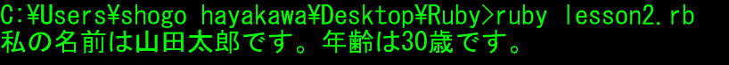
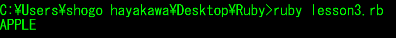
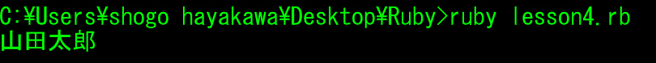
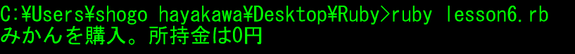
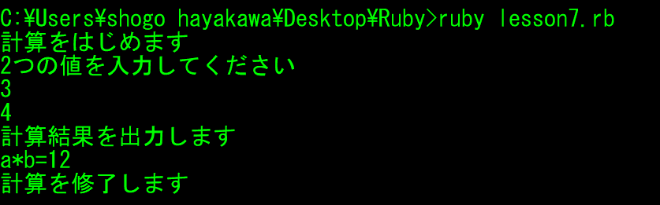
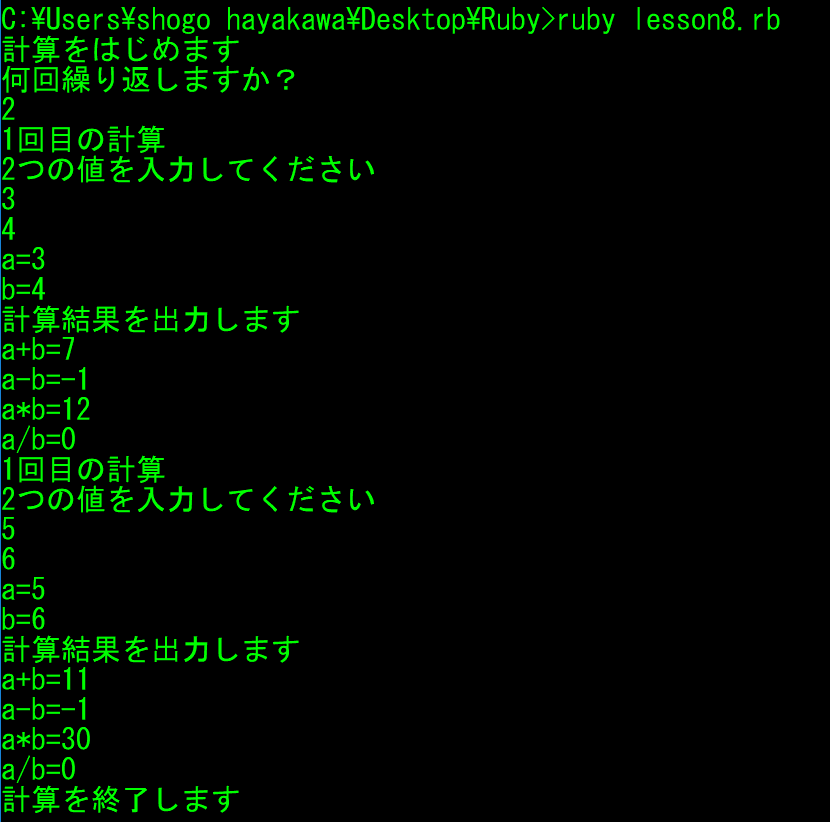

Ruby基礎問題
設問 1
「Hello World.」を画面に表示してください。
設問 2
型変換年齢の整数型を文字列型に変換させ、自身の自己紹介文を出力してください。
例："私の名前は●●●●です。年齢は●●歳です。"

設問 3
オブジェクトとメソッド"apple"という文字列を大文字に変換してください。
大文字に変換するメソッドについては、ご自身で探してみてください。

設問 4
変数と変数変数に自身の名前を代入させ、出力してください。
※変数名：name

設問 5
データ型"国語","算数","理科","社会"という文字列を要素に持つ配列を変数に代入させ、
"理科"を出力してください。
※変数名: subjects

設問 6
条件分岐if文を用いて、以下の処理を出力してください。
所持金が100円より大きい場合は、"みかんを購入。所持金に余りあり"と出力し、
所持金が100円ちょうどの場合は、"みかんを購入。所持金は0円"と出力し、
所持金が100円より少ない場合は、"みかんを購入することができません"と出力してください。
※所持金の変数名： total_price

設問 7
コンソールから文字入力コンソールから２つの数値を入力させ、
下記表示の通り、計算結果を表示させてください。

設問 8
繰り返し処理コンソールからループ回数，2つの数値を入力させ、
下記表示の通り、計算結果を表示させてください。
